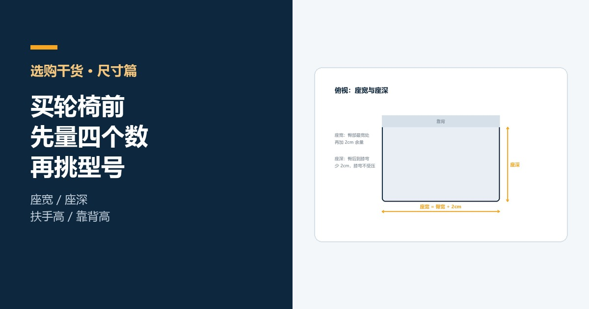
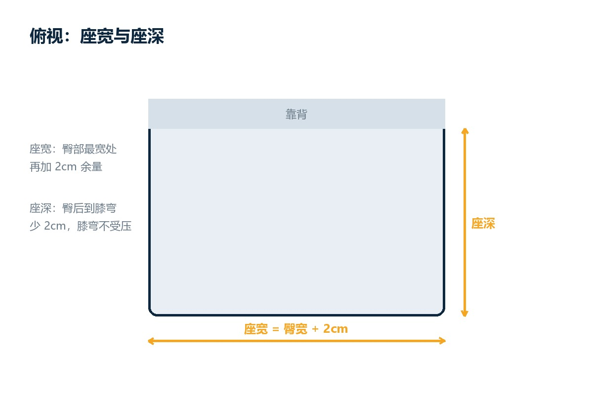
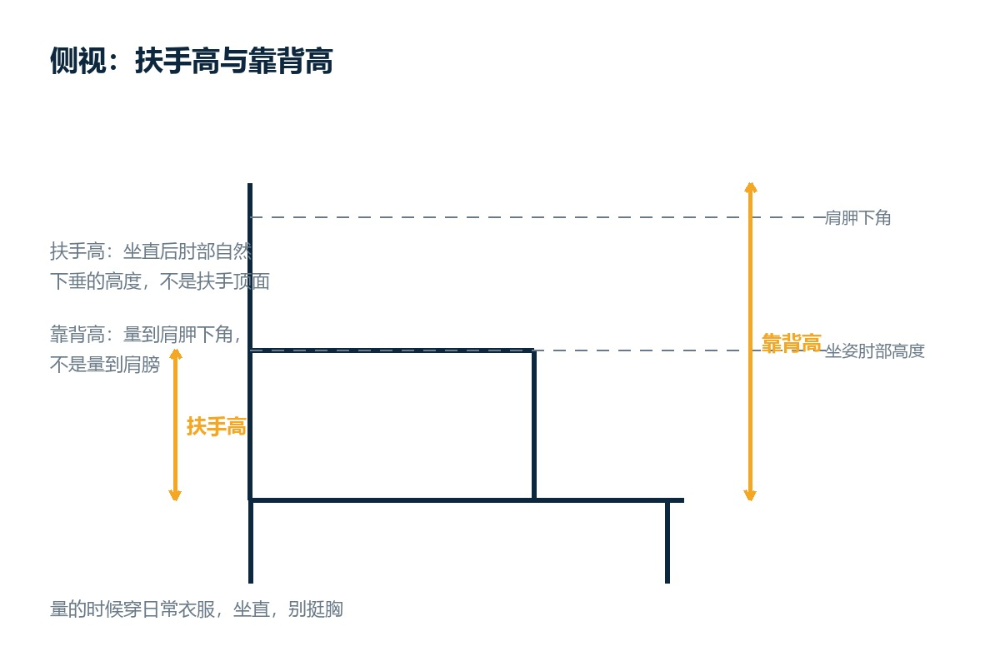
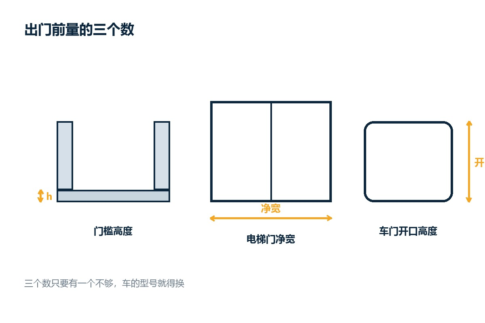

轮椅尺寸
买轮椅前先量四个数：座宽、座深、扶手高、靠背高
轮椅不合适，八成不是质量问题，是尺寸没量对。这篇把四个关键尺寸的量法、参考值和常见错误写清楚，附一张可以打印出来填的记录表，再加三个出门前必须量的环境尺寸。

轮椅坐着不舒服，八成不是质量差，是尺寸不对。我们做轮椅这些年，退换最多的一类原因就是这个：车没毛病，就是不合身。座宽多两厘米，人会在座位里左右晃，压得髋部疼；座深多三厘米，膝弯被顶住，坐半小时腿就麻。
这四个数在家拿一根软尺就能量，十分钟的事。量完再去选型号，比在网店翻一百页参数有用。
量之前：三件事先做对
第一，穿日常衣服量，别穿厚外套，也别穿睡衣。
第二，坐直，背贴靠背，双脚平放地面，别挺胸也别塌腰。
第三，用软尺，别用钢卷尺。软尺贴着身体走，量出来才是真实围度。
第一个数：座宽，臀宽加两厘米
量臀部最宽的地方，横着量一圈的一半，或者直接量两侧最突出点之间的距离。
座宽 = 臀宽 + 2 厘米。
加两厘米是为了留出衣物的厚度和起身时的活动量。加太多会晃，加太少会夹。
常见错误：量站立时的臀宽。人站起来臀部会收窄一到两厘米，按站立数据选车，坐上去就夹。
参考：成人常见座宽在 40 到 48 厘米之间，超过 50 厘米要选加宽款。佳康顺的 A3 手动轮椅、P11 碳纤维电动轮椅，型号表里都标了座宽，量完直接对档位。

第二个数：座深，臀后到膝弯减两厘米
从臀部最后端量到膝盖后侧的膝弯处，沿着大腿方向量。
座深 = 这个长度 - 2 厘米。
减两厘米，是为了让膝弯悬空一点。座面顶到膝弯，会压住血管和神经，坐久了小腿发麻，还容易往前滑。
常见错误：按"大腿长度"量。大腿长度和座深不是一回事，座深要的是臀后到膝弯的距离。
参考：成人常见座深 40 到 46 厘米。腿短的人别硬选大座深，宁可小一号。
第三个数：扶手高，等于坐姿肘高
坐直，手臂自然下垂，肘关节弯曲 90 度，从地面量到肘尖。
扶手高 = 坐姿肘高。
扶手太高会耸肩，肩膀酸；太低要塌肩去够，腰累。扶手顶面比肘尖低一到两厘米最舒服。
常见错误：量站姿肘高。站起来手肘的位置比坐着高，按站姿数据选，扶手一定偏高。
第四个数：靠背高，量到肩胛下角
坐直，摸到自己肩胛骨的最下角，从座面量到这个点。
靠背高 = 座面到肩胛下角。
这个高度能托住整个背部，又不挡肩膀活动。需要支撑头颈的，选带高靠背和头枕的款；需要自己推轮圈的，靠背要低一点，不然手臂后伸会被挡。
常见错误：量到肩膀。到肩膀的靠背会顶住肩胛骨，自己推轮子时胳膊抬不起来。

三个环境尺寸，比四个身体尺寸更容易翻车
车合适，门进不去，一样白买。出门前顺手量三个数：
- 门槛高度：家里最高的那道门槛，常见 2 到 5 厘米。
- 电梯门净宽：门框内侧到内侧，不是门洞外沿。低于 80 厘米要选窄车身。
- 车门开口高度：从地面到车门框上沿，决定能不能把车推进后排。
三个数只要有一个不够，型号就得换。这也是为什么建议先量环境，再量身体。经常要装车、坐飞机的，看 P16L 这类超轻折叠款，镁铝合金车架，电池能拆下来单独带。

一张可以打印的记录表
| 项目 | 怎么量 | 我的数据 |
|---|---|---|
| 座宽 | 臀宽 + 2cm | |
| 座深 | 臀后到膝弯 - 2cm | |
| 扶手高 | 坐姿肘高 | |
| 靠背高 | 座面到肩胛下角 | |
| 门槛高度 | 家里最高那道 | |
| 电梯门净宽 | 门框内侧 | |
| 车门开口高度 | 地面到门框上沿 |
填完这张表，选型号基本就是对照参数的事，不用再听人推荐。
什么时候四个数不够用
有三种情况，标准尺寸满足不了，需要定制：
一是体型明显偏离常规，比如臀宽超过 52 厘米，或者体重超过 120 公斤。
二是体态特殊，比如脊柱侧弯、髋关节挛缩，标准靠背和座面压不住。
三是使用场景特殊，比如需要长时间坐、需要边坐边工作，扶手和桌板要重新配。
这类需求走"定改制"：按人的尺寸改座宽、座深、靠背角度，一人一车。佳康顺接的定改制就是干这个的。改之前最好带着本人到现场试，光看数据容易差。
最后
量尺寸这件事，花十分钟，能省掉后面几个月的别扭。四个身体数、三个环境数，写在一张纸上，选车的时候照着对。
我们做轮椅和助行器，也接按尺寸改的活。真拿不准，把这七个数量出来，比问"哪款好"有用得多。